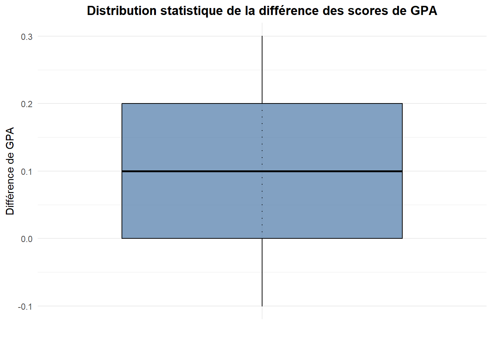
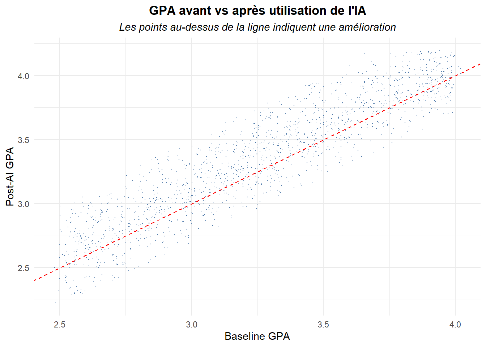
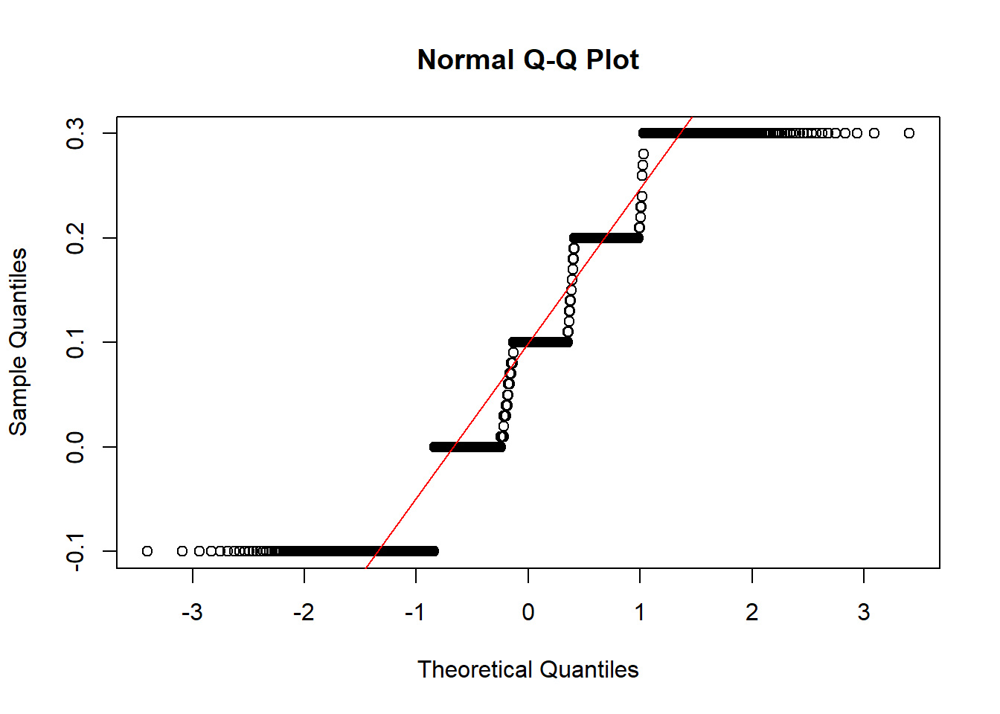
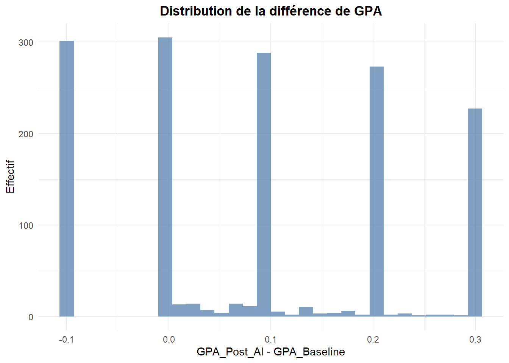
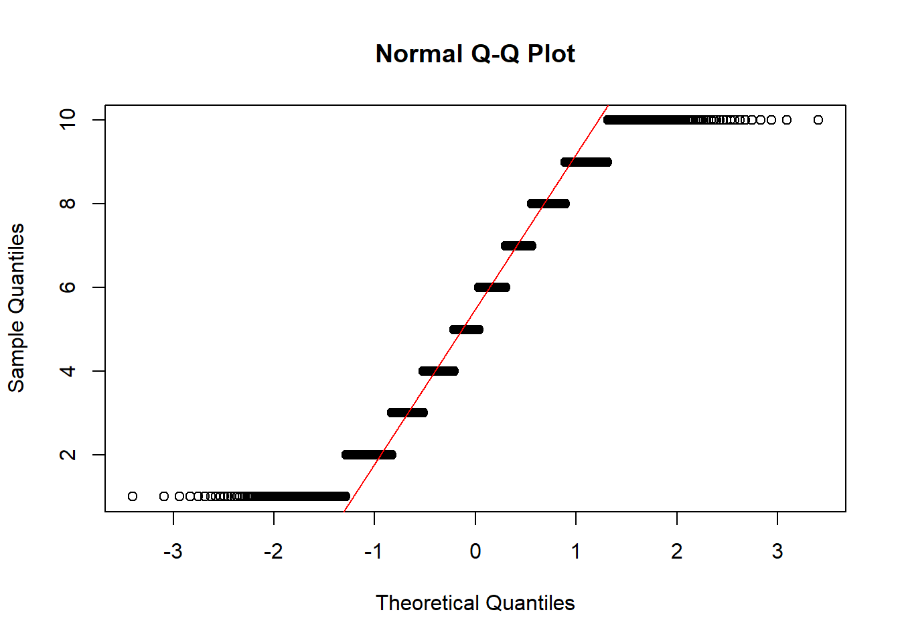
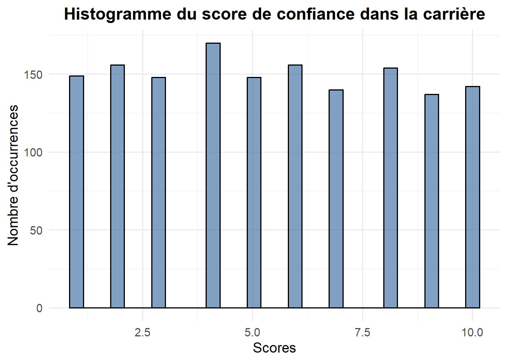
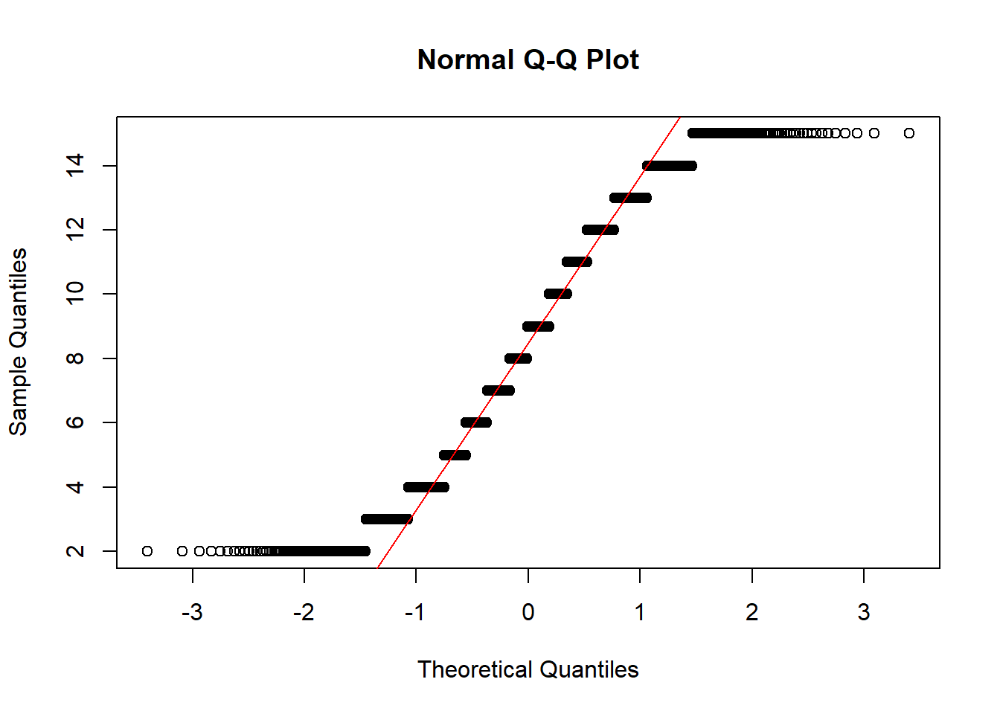
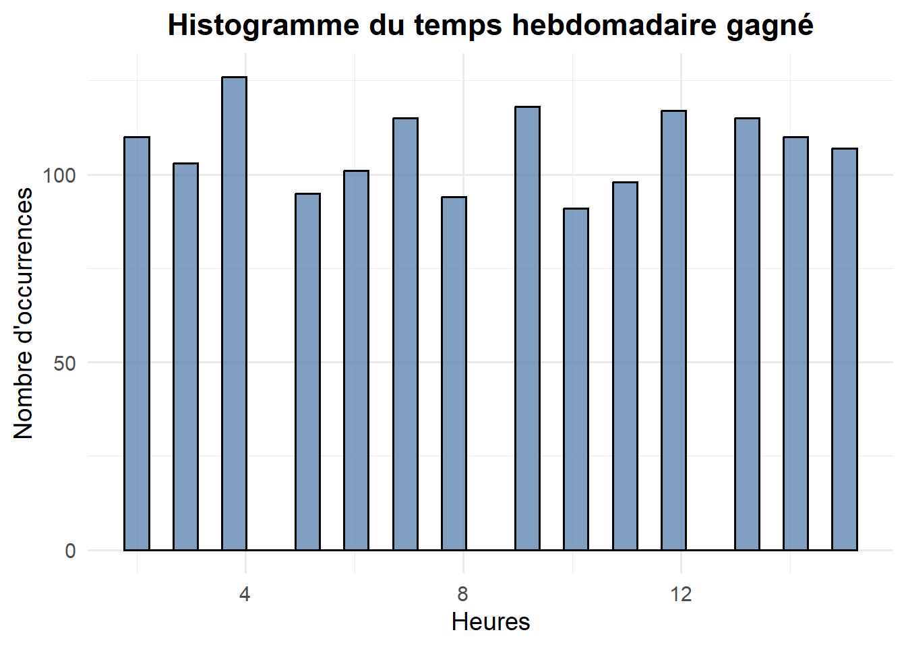

Cette page présente une sélection de projets d’analyse de données développés pour démontrer des compétences analytiques appliquées, un raisonnement statistique, la structuration des données et la communication.
Le portfolio est structuré autour de trois axes complémentaires :
R / Analyse statistique
Python / Analyse de données
SQL / Bases de données et modélisation de données
Le premier projet ci-dessous se concentre sur une analyse d’impact exploratoire réalisée avec R.
Ce projet explore un jeu de données sur l’utilisation de l’IA et la vie étudiante. L’objectif est d’évaluer si l’utilisation de l’IA est associée à la performance académique, à la confiance dans la carrière, aux préoccupations éthiques et aux gains de productivité perçus.
L’analyse a été menée sous R, en utilisant principalement le tidyverse, les fonctions statistiques de base et un nombre limité de bibliothèques supplémentaires pour la modélisation et le formatage des résultats (comme MASS pour les modèles ordonnés / multinomiaux, broom pour les modèles de régression “tidy”, et stats pour le clustering).
Le projet est exploratoire. Étant donné que le jeu de données ne comprend pas de groupe de contrôle — un groupe distinct d’étudiants n’utilisant pas l’IA — les résultats ne permettent pas d’établir de relations causales. L’objectif n’est pas de prouver que l’IA améliore les résultats des étudiants, mais d’évaluer si les données disponibles soutiennent des relations statistiques significatives.
Questions analytiques et variables principales
L’analyse se concentre sur cinq questions principales :
Existe-t-il un changement mesurable de la moyenne générale (GPA) après l’utilisation de l’IA ?
Les variables d’utilisation de l’IA expliquent-elles le changement de GPA ?
La confiance dans la carrière est-elle associée à la GPA ou à l’utilisation de l’IA ?
Les préoccupations éthiques sont-elles structurées par le comportement d’utilisation de l’IA ?
Peut-on segmenter les étudiants en profils d’utilisation de l’IA significatifs ?
Les scores de GPA, la confiance dans la carrière et les préoccupations éthiques perçues ont été sélectionnés comme variables dépendantes principales. Ces indicateurs sont couramment utilisés dans la recherche sur l’éducation et la formation, et fournissent un cadre standardisé pour évaluer les résultats potentiels associés à l’utilisation de l’IA.
Le jeu de données ne comprend que deux variables socio-démographiques, Age et Major. Cet ensemble limité de variables de contrôle restreint la capacité à rendre compte de l’hétérogénéité structurelle entre les étudiants (par exemple, le milieu socio-économique, la trajectoire académique antérieure, le contexte institutionnel) et limite donc la profondeur de toute analyse d’impact.
De plus, les variables d’utilisation de l’IA (fréquence des tâches, cas d’utilisation principal, outil principal et temps gagné) sont des mesures autodéclarées collectées par questionnaire. À ce titre, elles reflètent des perceptions subjectives plutôt que des comportements observés, ce qui introduit des biais potentiels (biais de rappel, biais de désirabilité sociale et effets d’approximation).
Enfin, les statistiques descriptives indiquent un niveau élevé d’uniformité dans les distributions à travers les 1 500 observations. Conjugué à la structure discrétisée de plusieurs variables (notamment la GPA), cela soulève des questions concernant la richesse empirique du jeu de données. Les données peuvent être simplifiées, simulées ou fortement standardisées, ce qui limite la variabilité et réduit la probabilité d’identifier des relations statistiques fortes.
AvertissementPositionnement méthodologique
En conséquence, l’analyse doit être interprétée comme un exercice exploratoire axé sur la rigueur méthodologique plutôt que comme une preuve de relations réelles.
Chargement et préparation des données (character variables -> factors)
library(tidyverse)
── Attaching core tidyverse packages ──────────────────────── tidyverse 2.0.0 ──
✔ dplyr 1.2.1 ✔ readr 2.2.0
✔ forcats 1.0.1 ✔ stringr 1.6.0
✔ ggplot2 4.0.3 ✔ tibble 3.3.1
✔ lubridate 1.9.5 ✔ tidyr 1.3.2
✔ purrr 1.2.2
── Conflicts ────────────────────────────────────────── tidyverse_conflicts() ──
✖ dplyr::filter() masks stats::filter()
✖ dplyr::lag() masks stats::lag()
ℹ Use the conflicted package (<http://conflicted.r-lib.org/>) to force all conflicts to become errors
library(MASS)
Attaching package: 'MASS'
The following object is masked from 'package:dplyr':
select
Rows: 1500 Columns: 11
── Column specification ────────────────────────────────────────────────────────
Delimiter: ","
chr (5): Student_ID, Major, Primary_AI_Tool, Main_Usage_Case, AI_Ethics_Concern
dbl (6): Age, Task_Frequency_Daily, GPA_Baseline, GPA_Post_AI, Time_Saved_Ho...
ℹ Use `spec()` to retrieve the full column specification for this data.
ℹ Specify the column types or set `show_col_types = FALSE` to quiet this message.
Student_ID Age Major
Length :1500 Min. :18.00 Biology :259
N.unique :1500 1st Qu.:20.00 Business Administration:256
N.blank : 0 Median :21.00 Data Science :259
Min.nchar: 8 Mean :21.49 Fine Arts :263
Max.nchar: 8 3rd Qu.:23.00 Modern History :221
Max. :25.00 Software Engineering :242
Primary_AI_Tool Task_Frequency_Daily Main_Usage_Case
ChatGPT-4o :288 Min. : 1.000 Brainstorming :286
Claude 3.5 :297 1st Qu.: 3.000 Code Debugging :264
Gemini Pro :302 Median : 5.000 Essay Drafting :301
GitHub Copilot:311 Mean : 5.407 Exam Prep :341
Perplexity :302 3rd Qu.: 8.000 Literature Review:308
Max. :10.000
GPA_Baseline GPA_Post_AI Time_Saved_Hours_Weekly AI_Ethics_Concern
Min. :2.500 Min. :2.400 Min. : 2.00 High :496
1st Qu.:2.880 1st Qu.:2.980 1st Qu.: 5.00 Low :523
Median :3.260 Median :3.360 Median : 9.00 Medium:481
Mean :3.257 Mean :3.345 Mean : 8.51
3rd Qu.:3.620 3rd Qu.:3.710 3rd Qu.:12.00
Max. :4.000 Max. :4.000 Max. :15.00
Career_Confidence_Score gpa_diff
Min. : 1.000 Min. :-0.10000
1st Qu.: 3.000 1st Qu.: 0.00000
Median : 5.000 Median : 0.10000
Mean : 5.417 Mean : 0.08773
3rd Qu.: 8.000 3rd Qu.: 0.20000
Max. :10.000 Max. : 0.30000
Le jeu de données contient 1 500 observations et aucune valeur manquante. Les variables de caractères ont été converties en facteurs, et une nouvelle variable, gpa_diff, a été créée pour mesurer la différence entre la GPA après l’IA et la GPA de base.
Changement de GPA : analyse descriptive
La première étape est descriptive. Les résumés fournis contiennent toutes les statistiques descriptives de base. Cependant, avant de modéliser toute relation, j’examine si le jeu de données contient une différence de GPA observable après l’utilisation de l’IA.
# A tibble: 1 × 5
min median mean sd max
<dbl> <dbl> <dbl> <dbl> <dbl>
1 -0.100 0.100 0.0877 0.135 0.300
La différence moyenne de GPA est positive, avec une augmentation moyenne d’environ +0,088 points de GPA.
De manière différente, ces statistiques descriptives peuvent être lues et comparées rapidement via une boîte à moustaches.
plot_gpa_diff <- tbl_database |>ggplot(aes(x ="", y = gpa_diff)) +geom_boxplot(fill ="#4C78A8", color ="black", alpha =0.7) +geom_point(color ="black", size =0.08) +labs(title ="Distribution statistique de la différence des scores de GPA",x ="",y ="Différence de GPA" ) +theme_minimal() +theme(plot.title =element_text(hjust =0.5, face ="bold") )plot_gpa_diff

Les résumés groupés montrent de petites différences dans les scores de GPA selon les spécialités (majors), les outils et les cas d’utilisation.
# A tibble: 6 × 6
Major min median mean sd max
<fct> <dbl> <dbl> <dbl> <dbl> <dbl>
1 Software Engineering -0.100 0.100 0.102 0.138 0.300
2 Biology -0.100 0.100 0.0932 0.140 0.300
3 Business Administration -0.100 0.100 0.0909 0.134 0.300
4 Data Science -0.100 0.100 0.0839 0.128 0.300
5 Modern History -0.100 0.100 0.0810 0.133 0.300
6 Fine Arts -0.100 0.0700 0.0751 0.135 0.300
gpa_by_tool
# A tibble: 5 × 5
Primary_AI_Tool min median mean max
<fct> <dbl> <dbl> <dbl> <dbl>
1 ChatGPT-4o -0.100 0.100 0.0941 0.300
2 Perplexity -0.100 0.100 0.0920 0.300
3 GitHub Copilot -0.100 0.100 0.0908 0.300
4 Gemini Pro -0.100 0.100 0.0817 0.300
5 Claude 3.5 -0.100 0.1000 0.0802 0.300
gpa_by_usage
# A tibble: 5 × 5
Main_Usage_Case min median mean max
<fct> <dbl> <dbl> <dbl> <dbl>
1 Code Debugging -0.100 0.100 0.0948 0.300
2 Essay Drafting -0.100 0.100 0.0877 0.300
3 Brainstorming -0.100 0.100 0.0876 0.300
4 Literature Review -0.100 0.100 0.0867 0.300
5 Exam Prep -0.100 0.100 0.0834 0.300
À ce stade, les statistiques descriptives suggèrent un léger glissement positif de la GPA, mais elles ne stipulent pas que ce changement est statistiquement significatif et n’expliquent pas ce qui motive ce changement.
Une autre façon de visualiser la différence de GPA est de construire un diagramme de dispersion, où tous les points au-dessus de la ligne y = x représentent une amélioration pour les étudiants.
plot_gpa_scatter <- tbl_database |>ggplot(aes(x = GPA_Baseline, y = GPA_Post_AI)) +geom_jitter(width =0.02,height =0.2,alpha =0.9,size =0.01,color ="#4C78A8" ) +geom_abline(slope =1, intercept =0, linetype ="dashed", color ="red") +labs(title ="GPA avant vs après utilisation de l'IA",subtitle ="Les points au-dessus de la ligne indiquent une amélioration",x ="Baseline GPA",y ="Post-AI GPA" ) +theme_minimal() +theme(plot.title =element_text(hjust =0.5, face ="bold"),plot.subtitle =element_text(hjust =0.5, face ="italic") )plot_gpa_scatter

Distribution de la différence de GPA
Avant d’utiliser des tests statistiques, la distribution des différences appariées doit être inspectée. Pour un test t apparié, l’hypothèse de normalité s’applique à la différence, et non aux deux variables de GPA séparément.
La manière la plus simple de procéder à la vérification de notre hypothèse est de construire un graphique Q-Q normal.
qqnorm(tbl_database$gpa_diff)qqline(tbl_database$gpa_diff, col ="red")

Pour une meilleure représentation visuelle, nous construirons également un histogramme de gpa_diff.
plot_gpa_hist <- tbl_database |>ggplot(aes(x = gpa_diff)) +geom_histogram(fill ="#4C78A8", alpha =0.7, bins =30) +labs(title ="Distribution de la différence de GPA",x ="GPA_Post_AI - GPA_Baseline",y ="Effectif" ) +theme_minimal() +theme(plot.title =element_text(hjust =0.5, face ="bold"))plot_gpa_hist

La distribution est discrétisée, très probablement en raison d’effets d’arrondi dans les valeurs de GPA : un score de GPA dans le présent jeu de données est systématiquement arrondi.
Cela limite la normalité stricte, mais la taille de l’échantillon (=1500) est suffisamment grande pour que le test t apparié reste robuste. Un test des rangs signés de Wilcoxon non paramétrique est également utilisé comme contrôle de robustesse dans la Section 1.7.
Tests statistiques de la GPA
La première question inférentielle est délibérément simple : les étudiants déclarent-ils une GPA plus élevée après l’utilisation de l’IA qu’avant ?
AstuceTest statistique : test t apparié
Question de recherche
La GPA post-IA est-elle significativement différente de la GPA de base ?
Hypothèse nulle (H0)
Il n’y a pas de différence moyenne entre la GPA de base et la GPA post-IA.
Hypothèse alternative (H1)
Il existe une différence moyenne entre la GPA de base et la GPA post-IA.
Méthode
Un test t apparié est utilisé car les deux mesures de GPA sont observées pour les mêmes étudiants.
Hypothèses
L’hypothèse clé de normalité s’applique aux différences appariées. Comme le montre la Section 1.6, la différence est discrétisée et n’est pas parfaitement normale. Cependant, compte tenu de la grande taille de l’échantillon, le test t apparié devrait rester robuste.
Le test t apparié est complété par un test non paramétrique car la distribution de la différence de GPA est discrétisée.
AstuceContrôle de robustesse : test des rangs signés de Wilcoxon
Hypothèse nulle (H0)
La différence médiane appariée est égale à zéro.
Hypothèse alternative (H1)
La différence médiane appariée n’est pas égale à zéro.
Méthode
Le test des rangs signés de Wilcoxon classe les différences appariées absolues et vérifie si les rangs positifs et négatifs sont équilibrés.
Raison de l’utilisation
Ce test est moins sensible aux écarts par rapport à la normalité et est approprié comme contrôle de robustesse après les résultats du diagnostic dans la Section 1.6.
# A tibble: 1 × 4
statistic p.value method alternative
<dbl> <dbl> <chr> <chr>
1 608061 0 Wilcoxon signed rank test with continuity corre… two.sided
Les deux tests indiquent une augmentation de la GPA statistiquement significative (p ≈ 0) après l’utilisation de l’IA. Les différences positives dominent les négatives à travers les observations. En d’autres termes, les étudiants ont tendance à s’améliorer plus souvent qu’à décliner. Cependant, l’ampleur du changement moyen reste modeste.
Notre prochaine étape consiste à tester si les variables d’utilisation de l’IA expliquent réellement ce changement.
Modélisation des résultats de la GPA
Les tests statistiques montrent que la GPA augmente en moyenne. L’étape de modélisation pose une question différente : les variables d’utilisation de l’IA peuvent-elles expliquer la variation des résultats de la GPA ?
Modèle naïf : différence de GPA expliquée par l’utilisation de l’IA
AstuceModèle 1 : modèle MCO sur la différence de GPA
Question de recherche
Les variables d’utilisation de l’IA expliquent-elles le changement de GPA ?
Variable dépendante
gpa_diff = GPA_Post_AI - GPA_Baseline
Hypothèse nulle (H0)
Les variables d’utilisation de l’IA n’ont aucune association avec le changement de GPA.
Hypothèse alternative (H1)
Au moins une variable d’utilisation de l’IA est associée au changement de GPA.
Méthode
La régression MCO est utilisée comme premier modèle explicatif.
Hypothèses et diagnostics
Les diagnostics des résidus sont inspectés après l’estimation du modèle. Comme discuté dans la Section 1.6, la variable dépendante est discrétisée, le modèle est donc traité comme exploratoire plutôt que définitif en termes d’analyse d’impact.
Le modèle n’a presque aucun pouvoir explicatif (R-carré ajusté < 1%, p-value > 0,8).
L’outil d’IA, la fréquence d’utilisation, le cas d’utilisation et le temps gagné n’expliquent pas de manière significative le changement de GPA (les coefficients sont extrêmement faibles et non significatifs).
Le graphique des résidus montre des bandes horizontales, confirmant la structure discrétisée de la variable dépendante.
Afin de résoudre tout problème lié à la forme de la variable dépendante (GPA_Post_AI - GPA_Baseline), et pour mieux contrôler les variations interpersonnelles, nous avons décidé d’utiliser dans le modèle suivant les scores originaux de GPA, avec GPA_Post_AI comme nouvelle variable dépendante.
Modèle ajusté : GPA post-IA contrôlée par la GPA de base
ImportantPourquoi la GPA de base doit être contrôlée
Le modèle précédent ignore le niveau académique de départ de chaque étudiant. C’est problématique car la GPA est bornée : les étudiants ayant une GPA de base élevée ont moins de marge de progression.
Pour tenir compte de cet effet de plafonnement, la GPA post-IA est modélisée tout en contrôlant la GPA de base.
Ce modèle explique environ 91% de la variance de la GPA post-IA. Cependant, ce pouvoir explicatif provient presque entièrement de la GPA de base. Les variables liées à l’IA restent non significatives.
La structure des résidus montre une discrétisation et un effet de plafond près de la valeur maximale de la GPA.
Modèle étendu : ajout de l’Age et de la Major
AstuceContrôles socio-démographiques
Question de recherche
L’âge et la spécialité améliorent-ils le modèle explicatif ?
Méthode
Le modèle de GPA ajusté est étendu avec Age et Major.
Stratégie d’interprétation
Ce modèle teste si les variables socio-démographiques ajoutent un pouvoir explicatif significatif au-delà de la GPA de base et des variables d’utilisation de l’IA.
model_gpa_post_extended <-lm( GPA_Post_AI ~ GPA_Baseline + Age + Major + Primary_AI_Tool + Task_Frequency_Daily + Main_Usage_Case + Time_Saved_Hours_Weekly,data = tbl_database)summary(model_gpa_post_extended)
L’ajout de l’âge et de la spécialité n’améliore pas substantiellement le modèle. La GPA de base reste le prédicteur dominant. Les autres effets (notamment ceux de certaines spécialités) sont faibles et ne doivent pas être surinterprétés sans preuves supplémentaires.
Modèle logistique : probabilité d’amélioration de la GPA
AstuceSpécification alternative : modèle d’amélioration binaire
Puisque gpa_diff est une variable discrète, un modèle binaire peut être utilisé comme spécification complémentaire.
Nouvelle variable dépendantegpa_improved = 1 si gpa_diff > 0, sinon 0.
Question de recherche Quelles variables prédisent si un étudiant améliore sa GPA ?
Méthode La régression logistique est utilisée pour modéliser la probabilité d’amélioration.
Interprétation Les coefficients sont transformés en rapports de cotes (odds ratios) pour plus de lisibilité.
Le modèle logistique ne révèle pas de prédicteurs robustes de l’amélioration de la GPA. Les étudiants en Beaux-Arts montrent des probabilités d’amélioration plus faibles par rapport aux étudiants en Biologie (33%, avec une p-value = 0,02), mais cet effet isolé doit être interprété avec prudence.
Confiance dans la carrière
Tournons-nous vers un autre type de résultat : la confiance dans la carrière. Cette variable ne mesure pas directement la performance académique. Elle capture plutôt une perception subjective de la préparation future à la vie professionnelle.
Corrélations avec les métriques de GPA
AstuceAnalyse de corrélation
Question de recherche
La confiance dans la carrière est-elle associée à la GPA de base, à la GPA post-IA ou au changement de GPA ?
Méthodes
Les corrélations de Pearson sont utilisées pour les relations linéaires. Les corrélations de Spearman et Kendall sont ajoutées comme contrôles de robustesse car la GPA et les scores de confiance sont des variables discrètes.
Interprétation
Si toutes les corrélations restent proches de zéro, il n’y a pas de relation continue ou monotone significative à signaler.
Les corrélations de Pearson, Spearman et Kendall sont toutes proches de zéro (<0,03). La confiance dans la carrière n’est donc pas associée de manière significative à la GPA de base, à la GPA post-IA ou au changement de GPA.
Les étudiants ayant amélioré leur GPA ont une confiance moyenne légèrement plus élevée (5,53 contre 5,25, soit une différence de 0,28 point), mais l’impact est très modeste.
Distribution de la confiance dans la carrière
qqnorm(tbl_database$Career_Confidence_Score)qqline(tbl_database$Career_Confidence_Score, col ="red")

plot_career_confidence_hist <- tbl_database |>ggplot(aes(x = Career_Confidence_Score)) +geom_histogram(fill ="#4C78A8", color ="black", alpha =0.7) +labs(title ="Histogramme du score de confiance dans la carrière",x ="Scores",y ="Nombre d'occurrences" ) +theme_minimal(base_size =14) +theme(plot.title =element_text(hjust =0.5, face ="bold") )plot_career_confidence_hist
`stat_bin()` using `bins = 30`. Pick better value `binwidth`.

La confiance dans la carrière est manifestement une variable discrète uniformément distribuée, suggérant une structure interne limitée à exploiter à des fins d’analyse.
Modèle de confiance dans la carrière
AstuceModèle MCO sur la confiance dans la carrière
Question de recherche
La GPA, les variables d’utilisation de l’IA, l’âge et la spécialité peuvent-ils expliquer la confiance dans la carrière ?
Variable dépendante
Career_Confidence_Score
Méthode
La régression MCO est utilisée comme approximation. Bien que la variable soit discrète, elle possède dix niveaux, ce qui permet un modèle linéaire exploratoire simple.
Interprétation
Le modèle est évalué globalement à l’aide du test F et du R², et pas seulement par les p-values individuelles.
model_career_confidence <-lm( Career_Confidence_Score ~ GPA_Post_AI + Age + Major + Primary_AI_Tool + Task_Frequency_Daily + Main_Usage_Case + Time_Saved_Hours_Weekly,data = tbl_database)summary(model_career_confidence)
Le modèle n’est pas globalement significatif et n’explique qu’une très faible part de la variance. Certains effets au niveau des spécialités apparaissent, mais ils ne doivent pas être surinterprétés.
Utilisation et adoption de l’IA
À ce stade, notre analyse change de direction. Au lieu de demander si l’utilisation de l’IA affecte les résultats, je teste si la performance académique de base prédit l’utilisation de l’IA.
AstuceModèle inversé : qui utilise l’IA plus fréquemment ?
Question de recherche
Les étudiants ayant une GPA de base plus faible utilisent-ils l’IA plus fréquemment ?
Hypothèse nulle (H0)
La GPA de base, l’âge et la spécialité ne prédisent pas la fréquence d’utilisation de l’IA.
Hypothèse alternative (H1)
Au moins une de ces variables prédit la fréquence d’utilisation de l’IA.
Méthode
La régression MCO est utilisée avec Task_Frequency_Daily comme variable dépendante.
Le modèle binaire confirme le même résultat : l’utilisation intensive de l’IA n’est pas prédite de manière significative par la GPA, l’âge ou la spécialité.
Préoccupations éthiques
La préoccupation éthique est une variable ordinale. Par conséquent, une régression logistique ordonnée est plus appropriée qu’un modèle linéaire standard.
AstuceRégression logistique ordonnée
Question de recherche
Les préoccupations éthiques sont-elles structurées par le comportement d’utilisation de l’IA ?
Variable dépendante
AI_Ethics_Concern
Méthode
Une régression logistique ordonnée est utilisée car la préoccupation éthique comporte des catégories ordonnées.
Interprétation
Les rapports de cotes supérieurs à 1 indiquent des chances plus élevées de se trouver dans une catégorie de préoccupation plus importante. Les rapports de cotes inférieurs à 1 indiquent des chances plus faibles.
L’utilisation quotidienne de l’IA montre une faible association négative avec la préoccupation éthique. Le rapport de cotes est d’environ 0,97, ce qui suggère une légère diminution de la probabilité (3%) de signaler une préoccupation éthique plus élevée à mesure que la fréquence d’utilisation augmente.
Cet effet de familiarité est statistiquement détectable mais faible. Globalement, la préoccupation éthique n’est pas fortement structurée par l’outil d’IA, le cas d’utilisation, le temps gagné, l’âge ou la spécialité.
Temps gagné
Le temps gagné est intuitivement attendu comme la variable la plus directement liée à l’utilisation de l’IA. Cela en fait un cas test important.
qqnorm(tbl_database$Time_Saved_Hours_Weekly)qqline(tbl_database$Time_Saved_Hours_Weekly, col ="red")

plot_time_saved_hist <- tbl_database |>ggplot(aes(x = Time_Saved_Hours_Weekly)) +geom_histogram(fill ="#4C78A8", color ="black", alpha =0.7) +labs(title ="Histogramme du temps hebdomadaire gagné",x ="Heures",y ="Nombre d'occurrences" ) +theme_minimal(base_size =14) +theme(plot.title =element_text(hjust =0.5, face ="bold") )plot_time_saved_hist
`stat_bin()` using `bins = 30`. Pick better value `binwidth`.

AstuceModèle MCO sur le temps gagné
Question de recherche
Quelles variables expliquent le temps hebdomadaire perçu comme gagné ?
Variable dépendante
Time_Saved_Hours_Weekly
Méthode
La régression MCO est utilisée pour tester si la fréquence d’utilisation, le cas d’utilisation, l’outil d’IA, la GPA, l’âge ou la spécialité expliquent le temps gagné.
Le modèle n’identifie pas de prédicteurs significatifs du temps gagné hebdomadaire. C’est notable car on s’attend intuitivement à ce que le temps gagné soit lié à la fréquence d’utilisation, mais les données ne soutiennent pas cette relation.
Il y a deux explications possibles à ces résultats : soit les mesures autodéclarées sont biaisées, soit le jeu de données a été construit artificiellement sans aucun lien avec des observations de terrain.
Clustering et segmentation
Plutôt que de tester uniquement des relations linéaires, la dernière étape de l’analyse explore si des profils latents d’étudiants émergent de la distribution conjointe de la performance académique, de l’utilisation de l’IA et des résultats perçus.
AstuceClustering K-means
Question de recherche
Les étudiants peuvent-ils être regroupés en profils distincts combinant performance académique, utilisation de l’IA et résultats perçus ?
Méthode
Le clustering K-means est appliqué aux variables numériques standardisées.
Variables utilisées
Task_Frequency_Daily
Time_Saved_Hours_Weekly
Career_Confidence_Score
GPA_Baseline
gpa_diff.
Raison de la mise à l’échelle (scaling)
Les variables sont mesurées sur des échelles différentes. La standardisation garantit que chaque variable contribue de manière égale à l’algorithme de clustering.
Limitation importante
Puisque les variables de GPA sont incluses dans le processus de clustering, les clusters résultants reflètent partiellement la structure des résultats. Ils doivent donc être interprétés comme des profils descriptifs et non comme des groupes causaux.
La distribution ne suggère aucun groupe dominant et indique une partition relativement homogène du jeu de données.
Le clustering K-means produit des groupes équilibrés, mais les profils ne sont que faiblement différenciés. Les principales différences proviennent de la GPA de base et de la différence de GPA plutôt que du comportement d’utilisation de l’IA.
Cluster 1 — Les “improvers” (ceux qui progressent)
GPA moyenne (3,07)
Gain de GPA important (+0,23)
Utilisateurs les plus actifs (5,57 tâches quotidiennes)
Gain de temps le plus élevé (9,24 heures par semaine)
Confiance la plus élevée (5,62)
Les étudiants de ce groupe présentent les gains de performance les plus forts. Leur niveau de base intermédiaire suggère des compétences suffisantes pour exploiter efficacement les résultats de l’IA, combinées à une marge de progression substantielle.
L’utilisation de l’IA apparaît ici comme une ressource complémentaire, soutenant l’apprentissage et la performance.
Cluster 2 — “GPA de base élevée, stable”
GPA de base élevée (3,71)
Gain faible (+0,04)
Utilisation quotidienne la plus faible (5,21 tâches par jour)
Gain de temps moyen (8,55 heures par semaine)
Score de confiance moyen (5,46)
Ces étudiants sont déjà proches de la limite supérieure de l’échelle de GPA. L’amélioration limitée est cohérente avec un effet de plafond, qui restreint mécaniquement les gains potentiels.
L’utilisation de l’IA semble plus sélective et marginale, avec un impact observable limité sur les résultats.
Cluster 3 — “faibles performances, gains faibles”
GPA de base faible (2,92)
Léger déclin (gpa_diff négatif de -0,02)
Fréquence d’utilisation moyenne (5,46 tâches par jour)
Moins de temps gagné (7,54 heures par semaine)
Score de confiance plus faible (5,11)
Malgré des niveaux d’utilisation comparables, ce groupe ne bénéficie pas de l’IA. L’absence de gains suggère un décalage entre l’utilisation de l’outil et les compétences sous-jacentes.
L’IA peut fonctionner ici comme un mécanisme de substitution plutôt que d’augmentation, entraînant des résultats limités, voire négatifs.
En d’autres termes :
Les étudiants ayant un score de GPA de base moyen sont ceux qui ont le plus bénéficié de l’utilisation de l’IA, tant sur la GPA que sur le score de confiance dans la carrière, étant les utilisateurs les plus actifs et économisant plus de temps que les deux autres groupes. Par conséquent, ils sont appelés “improvers”.
Les étudiants ayant une GPA de base plus élevée ont très peu gagné de l’utilisation de l’IA, leur engagement avec les outils d’IA étant généralement modéré, sinon inférieur à celui des autres groupes.
Cependant, les étudiants ayant un score de GPA de base plus faible n’ont rien gagné des outils d’IA, si ce n’est le score de confiance dans la carrière le plus bas et de pires résultats de GPA. Ils utilisent les outils d’IA presque aussi fréquemment que les “improvers”, mais ils en tirent moins de bénéfices que n’importe quel autre groupe.
Intégration des clusters dans le modèle de GPA
Pour tester si ces profils latents capturent une variation supplémentaire des résultats académiques, l’appartenance au cluster est introduite dans le modèle de GPA.
AstuceRégression basée sur les clusters : mise en garde sur l’interprétation
Objectif
Évaluer si l’appartenance au cluster explique la variation de la GPA post-IA au-delà de la GPA de base et des variables observées.
Limitation importante
Les clusters sont construits à l’aide de variables directement liées aux résultats de la GPA. Par conséquent, leur effet dans les modèles de régression reflète une structure latente déjà présente dans les données, et non un mécanisme causal indépendant.
Le modèle montre un pouvoir explicatif extrêmement élevé (R² ≈ 0,97), porté presque entièrement par la GPA de base.
GPA_Baseline ≈ 1.01 → persistance quasi parfaite
Variables d’utilisation de l’IA → non significatives
Time_Saved_Hours_Weekly → faible effet négatif
Effets de cluster :
Cluster 2 “GPA de base élevée” : -0,20 point de GPA (vs cluster 1 “improvers”)
Cluster 3 “GPA de base faible” : -0,26 point de GPA (vs cluster 1 “improvers”)
En maintenant la GPA de base constante, l’appartenance au cluster reste fortement associée aux résultats.
Les effets de cluster capturent des différences de performance résiduelles non expliquées par les variables observées. Cependant, comme les clusters sont partiellement construits à partir de variables liées à la GPA, ces effets doivent être interprétés comme des régimes de performance latents, et non comme des moteurs causaux.
Time_Saved_Hours_Weekly a un coefficient de -0,00315 (p < 0.001). Des gains de temps déclarés plus élevés peuvent entraîner une GPA légèrement inférieure, la GPA de base et le clustering étant contrôlés. L’ampleur de l’impact est faible, mais statistiquement claire. L’influence pourrait être le résultat d’un effet de substitution latent (les étudiants qui gagnent du temps peuvent réduire leurs efforts), d’une dépendance excessive, ou de l’efficacité remplaçant le traitement en profondeur et l’apprentissage profond.
Principaux résultats
L’analyse produit plusieurs conclusions cohérentes à travers les statistiques descriptives, les tests d’hypothèses, la modélisation et le clustering.
1. Forte persistance de la performance académique
La GPA post-IA est presque entièrement déterminée par la GPA de base. Dans tous les modèles, la performance antérieure explique l’écrasante majorité de la variance, indiquant une structure académique très stable.
2. Aucun effet mesurable des variables d’utilisation de l’IA
Les variables liées à l’IA — outil, fréquence d’utilisation, cas d’utilisation et temps gagné — n’expliquent pas de manière significative les résultats académiques.
Ce résultat est robuste à travers :
Les modèles MCO
Les modèles logistiques
L’analyse de corrélation
L’intensité de l’utilisation de l’IA ne se traduit pas par des différences de GPA mesurables.
3. Association négative entre temps gagné et performance
Le temps gagné est la seule variable liée à l’IA montrant un effet statistiquement significatif dans le modèle final, avec un faible coefficient négatif.
Cela suggère que les gains d’efficacité perçus peuvent ne pas correspondre à une amélioration des résultats d’apprentissage.
3. Association négative entre temps gagné et performance
Le temps gagné est la seule variable liée à l’IA montrant un effet statistiquement significatif dans le modèle final, avec un faible coefficient négatif. Cela suggère que les gains d’efficacité perçus peuvent ne pas correspondre à une amélioration des résultats d’apprentissage.
4. Faible structure des variables subjectives
La confiance dans la carrière et les préoccupations éthiques ne sont que faiblement liées à la fois à la GPA et aux variables d’utilisation de l’IA. Ces dimensions apparaissent largement indépendantes de la performance académique observée.
Les préoccupations éthiques ne montrent qu’une faible association avec la fréquence d’utilisation de l’IA et un effet de familiarité : plus les outils d’IA sont utilisés, moins l’utilisateur semble préoccupé par leurs implications éthiques.
5. Existence de profils de performance latents
Le clustering révèle trois profils distincts principalement structurés par : - Le niveau académique de base - L’évolution de la GPA - Le score de confiance dans la carrière
Les variables d’utilisation de l’IA ne différencient pas fortement ces groupes. Lorsqu’ils sont intégrés aux modèles de régression, les clusters restent statistiquement très significatifs, indiquant la présence d’une hétérogénéité non observée dans les trajectoires académiques.
6. L’IA comme amplificateur dépendant des capacités
L’ensemble des preuves suggère que l’IA ne fonctionne pas comme un rehausseur de performance universel. Au contraire, l’IA semble agir comme un amplificateur dépendant des capacités, où les résultats dépendent des compétences de base et de l’aptitude à utiliser l’outil efficacement : - Les étudiants intermédiaires en bénéficient le plus ; - Les étudiants les plus performants montrent des gains limités (effet de plafond) ; - Les étudiants les moins performants peuvent ne pas en bénéficier, voire être affectés négativement.
Interprétation
Le jeu de données ne soutient pas de relation forte entre l’utilisation de l’IA et les résultats académiques. La relation statistique la plus robuste trouvée ici est la continuité entre la GPA de base et la GPA post-IA. Cela suggère que la performance académique est hautement stable, tandis que l’utilisation de l’IA, la confiance dans la carrière, les préoccupations éthiques et le temps gagné sont faiblement connectés dans ce dataset.
En plus des biais de mesure autodéclarés et d’une probabilité d’origine artificielle du jeu de données, cette observation nous laisse penser que la relation entre les technologies d’IA et les scores de GPA est probablement modérée par d’autres variables non enregistrées dans les données collectées.
L’analyse de clusters a produit les résultats les plus avancés et nous incite fortement à suggérer que l’efficacité de l’IA dépend de l’interaction entre la capacité de base et la qualité de l’usage. L’IA n’est pas un moteur primaire de performance ; elle agit comme un amplificateur ou un déstabilisateur de capacités, selon le profil de l’utilisateur.
La relation entre la capacité académique de base et les gains liés à l’IA semble non monotone, suggérant une dynamique de type “U inversé” :
Pour les étudiants performants, l’IA opère sous une contrainte de plafond. Les gains sont mécaniquement limités et l’usage semble stratégique plutôt que transformateur.
Les étudiants ayant une performance de base intermédiaire présentent les rendements marginaux les plus élevés. Leur ensemble de compétences semble suffisamment développé pour exploiter les sorties de l’IA de manière critique, tout en laissant une marge de progression substantielle.
Pour les étudiants les moins performants, l’utilisation de l’IA peut substituer plutôt qu’augmenter les processus d’apprentissage. Une capacité d’évaluation limitée peut conduire à une utilisation inefficace ou contre-productive.
Les résultats suggèrent que l’efficacité de l’IA est médiée non par l’intensité de l’utilisation, mais par la qualité de l’utilisation — c’est-à-dire la capacité à interpréter, adapter et intégrer de manière critique les contenus générés par l’IA.
ImportantLittératie de l’IA et qualité d’usage
L’IA ne semble pas égaliser les performances académiques. Au contraire, elle renforce les trajectoires existantes : elle bénéficie marginalement aux meilleurs, soutient significativement les étudiants intermédiaires et peut désavantager ceux qui manquent de compétences pour l’utiliser efficacement. C’est une illustration de l’effet Matthew : “les riches deviennent plus riches”.
Limites
Plusieurs limites doivent être prises en compte :
Le jeu de données est observationnel et ne comprend pas de groupe de contrôle.
Les différences de GPA sont discrétisées et affectées par des arrondis.
Les variables d’utilisation de l’IA sont autodéclarées plutôt que directement observées.
Le dataset comprend des contrôles socio-démographiques limités.
Certaines variables apparaissent faiblement connectées, suggérant une structure interne limitée.
La significativité statistique n’implique pas nécessairement un impact pratique.
Le jeu de données peut être synthétique ou simplifié, ce qui limite la généralisation au monde réel.
Projet d’analyse de données Python
À venir.
Cette section présentera un projet basé sur Python utilisant pandas, numpy et des bibliothèques de visualisation pour explorer, nettoyer et modéliser un jeu de données structuré.
Projet SQL et bases de données
À venir.
Cette section présentera un projet orienté base de données axé sur la modélisation des données, les requêtes SQL, la structuration relationnelle et éventuellement la logique de base de données orientée graphe.